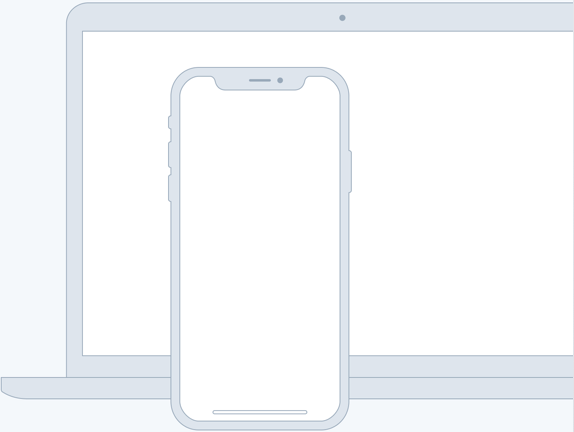

TAGLINE

Source helps creators do more of what they love
A device that enables collaboration will lessen the chance of work having to be completely redone.
Feature one
In such a test, the user performs realistic tasks by interacting with the paper prototype
First Link ➙Feature two
Three techniques of paper prototyping used for usability testing are comps, wireframes
Second Link ➙Feature three
Rapid prototyping involves a group of designers who each create a paper prototype
Third Link ➙Feature four
Functionality is similarly unimportant, but in this case are closer to the final product
Fourth Link ➙